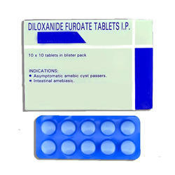

Amoebicides

Amoebicides (ကပ္ပါးပိုးသတ္ေဆး) ဆိုတာဘာလဲ
Amoebicides ဆိုတာ amoebozoa (အမီဘိုဇိုးအား) ကပ္ပါးပိုးေၾကာင့္ျဖစ္ေသာ ဝမ္းကိုက္ေရာဂါမ်ား ကုသရာတြင္ သံုးေသာေဆးမ်ားကို ေခၚျခင္း ျဖစ္ပါသည္။
Amoebicides ေတြကို ဘယ္လိုခြဲထားလဲ
အူကပ္ပါးပိုးသတ္ေဆးႏွင့္ တစ္သွ်ဳး ကပ္ပါးပိုးသတ္ေဆးဆိုၿပီး ႏွစ္အုပ္စု ခြဲထားပါသည္။
အူကပ္ပါး ပိုးသတ္ေဆးမ်ား အုပ္စုမွာ ဘာေဆးေတြပါလဲ
- Diloxanide furoate, Iodoquinol, Clioquonol တို႔ႏွင့္ ပိုးသတ္ေဆးအုပ္စုဝင္ Paromomycin, Erythromycin ႏွင့္ Tetracycline တို႔ ပါဝင္ပါသည္။
တစ္သွ်ဳးကပ္ပါး ပိုးသတ္ေဆးအုပ္စုမွာေရာ ဘာေဆးေတြပါလဲ
- Nitroimidazole အုပ္စုဝင္ေဆးမ်ားျဖစ္ေသာ လူသိမ်ားတဲ့ Metronidazole, Tinidazole, Ornidazole, Secnidazole တို႔အျပင္ Emetine, Dehydroemetine ႏွင့္ Chloroquine တို႔ ပါဝင္သည္။
ကပ္ပါးပိုးသတ္ေဆးေတြကို ဘယ္မွာသံုးလဲ
- အူကပ္ပါးပိုးသတ္ေဆးမ်ားကို အဓိက အားျဖင့္ ေရာဂါလကၡဏာ မျပဘဲ ကပ္ပါးပိုးဥက်ဆင္းသူမ်ားႏွင့္ အေပ်ာ့စား အူလမ္းေၾကာင္းပိုးဝင္ျခင္းတို႔မွာ သံုးေလ့ရွိၿပီး တစ္သွ်ဳးကပ္ပါးပိုးသတ္ေဆးမ်ား အနက္ Metronidazole အား ကပ္ပါးပိုးမ်ား ေၾကာင့္ျဖစ္ေသာ ဝမ္းကိုက္ျခင္ႏွင့္အျခာေသာ ေရာဂါ မ်ားအေျခအေနမ်ား တြင္သံုးေလ့ရွိပါသည္။ ထို႔အျပင္ Metronidazole အား ဆီးလမ္းေၾကာင္းကပ္ပါးပိုးဝင္ျခင္း၊ သြားဖံုးေရာင္၊ ပါးေပါက္နာ၊ အေျမႇးပါးတုျဖစ္ၿပီး အူေရာင္ျခင္း၊ Trichomonas ႏွင့္ Gardnerella တို႔ေၾကာင့္ မိန္းမကိုယ္ေရာင္ရမ္းျခင္းမ်ားမွာလည္း သံုးေလ့ရွိပါသည္။
- Emetine ကိုမူ ဆိုးရြားေသာေရာဂါအေျခအေနမ်ားကို ထိန္းခ်ဳပ္ရန္သံုးၿပီး Chloroquine ကိုမူ Metronidazole အားယဥ္ပါးေသာ အေျခအေနမ်ားႏွင့္ အသည္းကပ္ပါးပိုး ဝင္ျခင္းတို႔ကို ကုသရာတြင္ သံုးေလ့ရွိပါသည္။
ဆိုးက်ဳိး ဘာေတြရွိလဲ
- အမ်ားအားျဖင့္ ဗိုက္ပြ၊ မအီမသာျဖစ္ျခင္း၊ ပ်ိဳ႕အန္ျခင္း၊ ဝမ္ေလွ်ာျခင္း၊ အေရျပားယားယံျခင္း၊ အင္ျပင္ထျခင္း ၊ ဗိုက္ေအာင့္ျခင္း တို႔ျဖစ္တတ္ပါတယ္။
- Iodoquinol ေဆးမွာ တိုင္းရြိတ္ဂလင္းႀကီးျခင္း၊ အျမင္ေဝဝါးျခင္းတို႔ုျဖစ္တတ္ၿပီး Metronidazole မွာလွ်ာခါးျခင္း၊ ဆီးအေရာင္ရင့္ျခင္း၊ လွ်ာထူျခင္း၊ က်ီးကန္းပါးစပ္ျဖစ္ျခင္း ၊ ေခါင္းမူး ေခါင္းကိုက္၊ ခ်ာခ်ာလည္ေအာင္မူးျခင္း တို႔ျဖစ္တတ္ပါတယ္။ အဆိုပါ ဆိုးက်ိဳးမ်ားျဖစ္ပါက နီးစပ္ရာေဆးခန္းသို႔ သြားေရာက္ကုသသင့္ပါတယ္။
မေသာက္ခင္ ဘာေတြ သတိထားရမလဲ
- အထူးသတိျပဳရန္မွာ Metronidazole သည္ အရက္ႏွင့္ ေသာက္မိလွ်င္ Disulfiram like reaction ဟုေခၚေသာ ျပင္းထန္စြာ ဓါတ္ျပဳမႈျဖစ္ႏိုင္သျဖင့္ ေဆးမေသာက္ခင္ ၂၄ နာရီ ႏွင့္ ေဆးေသာက္ၿပီး ၄၈ နာရီအထိ အရက္မေသာက္သင့္ပါ။
- ေဆးမတည့္ျခင္း၊ အသည္းေရာဂါ ရွိ/မရွိ ဆရာဝန္အား ႀကိဳေျပာ သင့္ပါသည္။
- ကိုယ္ဝန္ေဆာင္မ်ားႏွင့္ ႏို႔တိုက္မိခင္မ်ားသည္ အႏၲရာယ္ရွိႏိုင္သျဖင့္ ဆရာဝန္ႏွင့္တိုင္ပင္ၿပီးမွ ေသာက္သံုးသင့္ပါသည္။
ေဆးဓါတ္ျပဳမႈဘာေတြရွိလဲ
- စြဲေသာက္ေနေသာေဆး/တိုင္းရင္းေဆးရွိ/မရွိ ႀကိဳေျပာသင့္ပါသည္။
- Phenobarbitone, Phenytoin, Prednisone ႏွင့္ Rifampicin တို႔မွာ အခ်ဳိ႕ေသာ ကပ္ပါး ပိုးသတ္ေဆးမ်ား (ဥပမာ Metronidazole) ၏ အာနိသင္ကို ေျပာင္းေစေသာေၾကာင့္ ဆရာဝန္၏ ၫႊန္ၾကားခ်က္ျဖင့္သာ ေသာက္သံုးသင့္ပါသည္။
ေဆးေသာက္လြန္လွ်င္ ဘာျဖစ္ႏိုင္သလဲ
ေဘးထြက္ဆိုးက်ိဳးမ်ား ပိုဆိုးႏိုင္ကာ အႏၲရာယ္ရွိသျဖင့္ ေဆးေသာက္ လြန္လွ်င္ ဆရာဝန္အား အျမန္ဆံုးျပသင့္ပါတယ္။
Source-အိမ့္ခ်ယ္ရီ